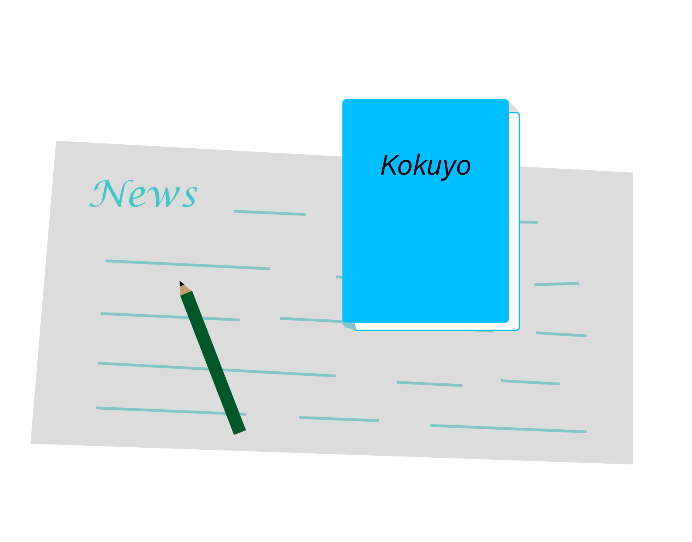

Top Sales
1. KOKUYO Campus
2. Jibun Techo Biz
3. Kadokeshi erasers
4. Loose leaf papers
5. Hakoake 2Way scissors
Kuroda Yoshitaro opened “Kuroda Cover Store” to produce the cover of Japanese style books in 1905, this is the beginning of Kokuyo company.
The brand message is “inspiration trickyness”, moreover, “Yokoku of Kukoyo” is also used in CM.
Kokuyo is an independent company, but the capital of Sumitomo Mitsui Banking Corporation is included as a shareholder.